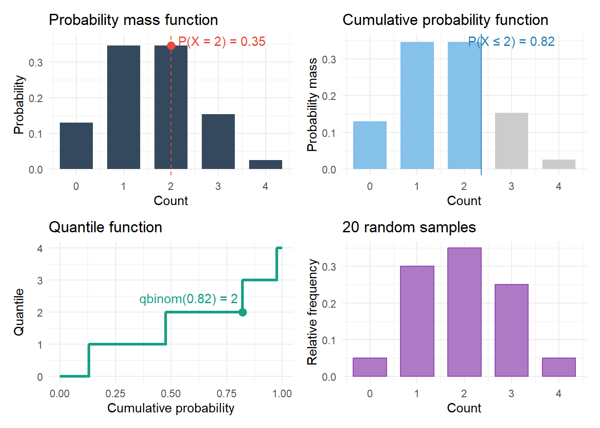
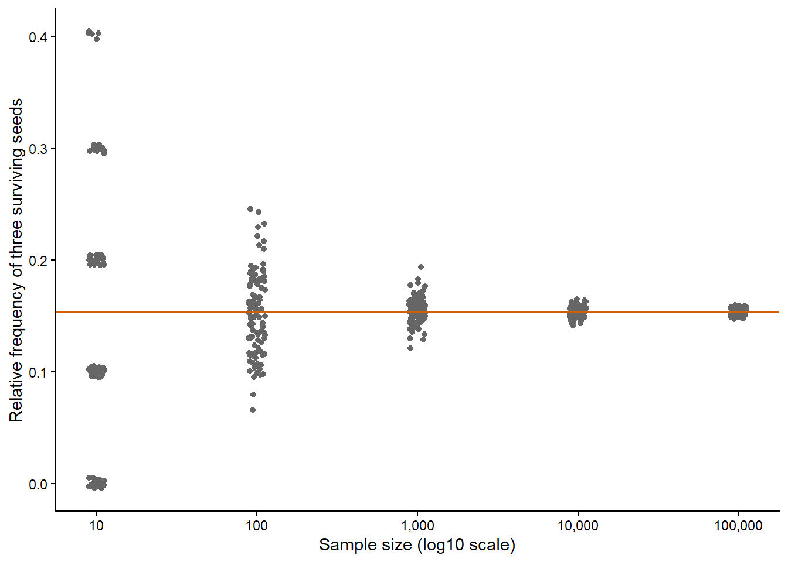
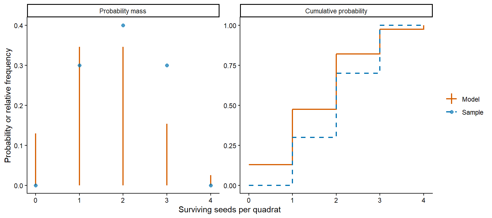
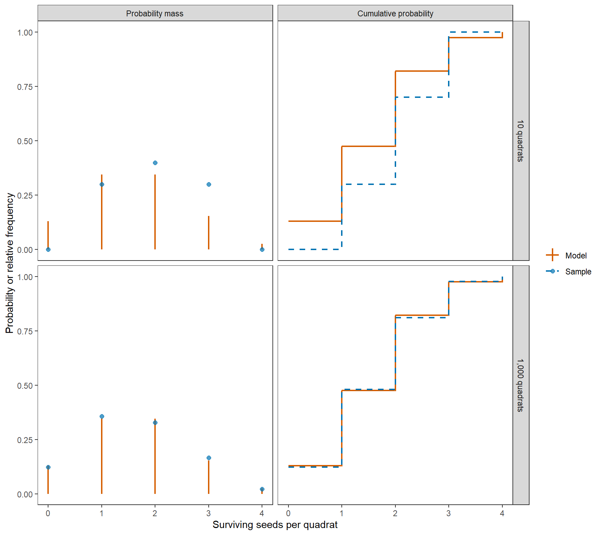
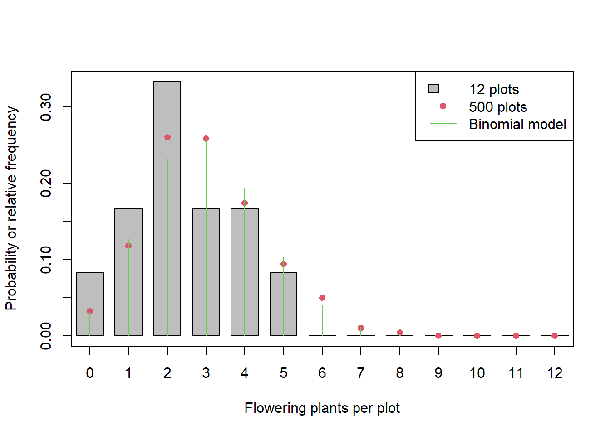
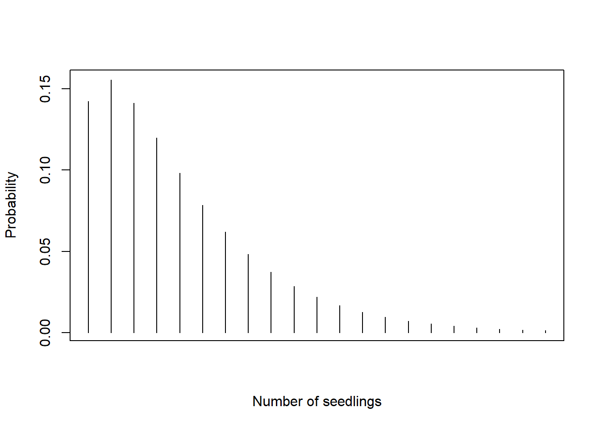

# size = n, prob = p in formula for Binomia
seed_survival_probability = 0.4
seed_count = 4
dbinom(x = 2, size = seed_count, prob = seed_survival_probability)
pbinom(q = 2, size = seed_count, prob = seed_survival_probability)
qbinom(p = 0.5, size = seed_count, prob = seed_survival_probability)
rbinom(n = 10, size = seed_count, prob = seed_survival_probability)Introduction to Probability (Discrete)
Introduction
In this chapter, we learn how to introduce probability distributions as the central pillar to build out statistical models. We focus on count data first. You may count, for example, surviving seedlings, flowering plants, or wildlife camera detections, but a count from one location or night is never the whole ecological story. We represent these counts using discrete random variables which take separate, countable values such as \(0, 1, 2, \ldots\). Chapter 3 extends these ideas to continuous measurements
Learning goals
In this chapter, we will cover:
- discrete random variables and probability;
- the four faces of a distribution (mass, cumulative, quantile and samplers);
- the assumption of independence;
- means and variances from distributions and samples;
- how samples and distributions are related;
- how to simulate possible observations from a model;
- the concept of overdispersion.
We will learn more about the Binomial, Poisson and Negative Binomial distributions and practice with them. Additional distributions are available in the Supplement.
Random variables and probability distributions
A random variable is the quantity whose value is uncertain before we make that observation. For a count, its possible values are non-negative integers. We will use a hypothetical experiment on seed survival to illustrate how to model ecological count data. Suppose we randomly distribute several quadrats in a field and in each of them we place four seeds of a target species. We come back after a pre-specified period of time and we measure how many seeds survived inside the quadrat.
The random variable \(X\) keeps track of the possible counts of seeds that would survive in a quadrat. If the quadrat contains four seeds, then \(X\) can take any integer value from 0 to 4. Mathematically, this is expressed as:
\[ X \in \{0,1,2,3,4\}. \]
The support of a random variable is the set of values that the variable can take. In this case \(X\) can take a finite set of values. In other cases, there is no pre-specified maximum, such as the number of spores or insects that could fall into a trap. In those cases we will model count data with random variables that can take any positive integer value (i.e., \(\{1, 2, 3, ...\}\), formally known as countably infinite). Technically, this accounts for an infinite number of counts, though in practice the counts will always be finite and constrained to the relevant order of magnitude.
Discrete random variable
A random variable is discrete when it takes values from a finite or countably infinite set.
Note that \(X\) does not keep track of the actual seeds that survived in a particular quadrat, that is what we call an observation of the real world. Rather, \(X\) represents how likely we are to observe a particular number. That is measured by a probability. That is, a random variable will have a probability distribution associated with it that assigns a value between 0 and 1 to every possible observation or set of observations. For example, it might assign these probabilities:
| \(x\) | \(P(X=x)\) |
|---|---|
| 0 | 0.05 |
| 1 | 0.15 |
| 2 | 0.30 |
| 3 | 0.30 |
| 4 | 0.20 |
We can also define the probability of any set of values by addition of individual probabilities. For example, the probability that at least 4 seeds survive is:
\[ P(X \geq 4) = P(X = 4) + P(x = 5). \]
The probability that any value occurs is the sum of all the individual probabilities, and that sum must always be 1:
\[ \sum_{\forall x} P(X = x) = 1, \]
where \(\forall x\) means “for all possible values \(x\)”.
Note that the capital letter \(X\) refers to the random variable, while the lower-case \(x\) refers to a possible observation. This distinction looks fussy at first, but it helps to keep the model and the data separate once we start estimating parameters later in the course.
What do these probabilities mean?
We saw above that we could assign probabilities to the different possible observations and that probabilities obey some basic mathematical properties. What does it mean to say “the probability that 2 seeds survive is 0.15”? There are two complementary perspectives that one can take depending on how probability is being applied (see Chapter 1 for further details on applications of probability):
Epistemic probability1: If the goal is to predict the number of seeds that survive in a specific quadrat, probability represents how certain we are about each possible predicted value (e.g., in the table above I am twice as confident that the value will be 2 compared to 1). This relates to how much knowledge or information we have about the system we are predicting.
Aleatoric probability2: Probability can also represent the relative frequency at which different counts will be observed across all the possible replications of the same experiment or observation protocol. This relates to errors in measurements, and stochasticity and variability in ecological systems.
For many reasons, this course will focus on aleatoric probability as implemented by the Frequentist statistical paradigm3, so we will use probabilities to model the relative frequencies at which different observations (or, in Chapter 4, different parameter estimates) can occur.
Probability distributions
When the set of possible observations is small we can keep track of probabilities in tables. However, as the number of possible observations increases this is not feasible. Instead, we use a probability mass function which is a formula that assigns a probability to every possible \(x\). From the mass function we can compute by countable addition the probability of any possible set of observations, which is what we call a probability distribution.
Probability distribution
A probability distribution assigns probabilities to all possible sets of values of a random variable. Its foundation is a probability mass function.
There are many probability distributions that already exist, and we represent them by their probability mass function. The oldest and most basic distribution for discrete data is the Binomial distribution, discovered by Jacob Bernoulli in 17134. This distribution assumes that we are observing a fixed number of events, each of which can have two values (0 or 1) and each event has the same fixed probability of having the value 1. It makes sense to use this distribution for our seed survival example: the event is whether a seed survives (1) or not (0) and we assume all seeds have the same survival probability.5
The probability mass function of the Binomial is given by:
\[ P(X=x)=\binom{n}{x}p^x(1-p)^{n-x}, \]
where \(n\) is the number of events being observed, and \(p\) is the probability of an event having the value 1. I provide more details on this distribution (and others) later in the chapter.
Every distribution has four functions that are interrelated6 Figure 1:
- Probability mass;
- Cumulative probability;
- Quantile;
- Random sampler.
In R, all of these functions are implemented for each distribution. The name of each function consists of a prefix letter followed by a shortened name for the distribution. The four faces of the Binomial distribution are implemented by functions dbinom, pbinom, qbinom and rbinom, respectively.
To illustrate the four faces, we will assume in our seed survival example that each seed has a probability of survival of \(0.4\) and that the variation in observations across different quadrants follows a Binomial distribution. In R:
Note that the first argument (x, q, p, or n) is always the same for all distributions in R. The other arguments are the parameters for a given distribution (in this case, size is \(n\) and prob is \(p\) in the formula above).
The four faces of distributions in R
For a distribution in R:
d*functions calculate probability massp*functions calculate cumulative probabilitiesq*functions calculate quantilesr*functions generate random samples
The first argument is conventionally named x, q, p, or n, respectively.
A cumulative probability function (\(F_X\)) is the result of adding probability masses up to and including a value \(x\) (q in pbinom):
\[ F_X(x)=P(X\leq x). \]
For example, \(F_X(3)\) is the probability that at most three seeds survive. The cumulative probability is always between zero and one, and it never decreases as \(x\) increases. We will not use it much in this course7.
A quantile function is the inverse of the cumulative probability function. That is, we supply a cumulative probability and ask at which value of \(x\) it is reached. Because we are dealing with discrete variables, we define the \(\alpha\)-quantile as the smallest \(x\) whose cumulative probability (p in qbinom) reaches or exceeds \(\alpha\), which mathematically is written as:
\[ q_\alpha=\min\{x:F_X(x)\geq\alpha\}. \]
We will use quantiles to describe a distribution numerically (e.g., the median of a distribution is the \(0.5\) quantile) as complements to expectations and moments (see later). We will also use quantiles to quantify parameter uncertainty as confidence intervals (see Chapter 4).
The fourth face is not so much a function as a procedure. A random sampler is a procedure that generates possible samples from the distribution8. This means a series of possible observations that are compatible with the distribution. For example, if we want to simulate a collection of 10 quadrats from the example above, we would generate 10 random samples from the Binomial distribution.
We will use random sampling throughout the course (we will call it simulation) as it is a versatile way of analysing the statistical properties of a model being fitted to data. We will discuss in more detail how samples relate to their distributions in Section 4.

When we simulate random samples in R, the computer does not observe a truly random physical process. It uses a deterministic algorithm to generate a pseudo-random sequence: a sequence designed to have the mathematical properties needed for random sampling. This is enough for the probability simulations we use in this course, while also making them reproducible.
A seed specifies the starting state of that algorithm. If you set the same seed before running the same simulation, R produces the same pseudo-random sequence again. We set a seed with set.seed(), usually once before a simulation or a batch of repeated simulations:
# Make a later random simulation reproducible.
set.seed(42)Changing the seed changes the sequence. Always set the seed at the start of your script or (even better) before any random sampling, to make sure that you generate reproducible results.
Practice: orchid fruit set
In a restoration plot, we tag six orchid flowers. Each of them has a probability of setting fruit of \(0.5\). Let \(X\) be the number of these flowers that set fruit.
- What values can \(X\) take?
- Use R to calculate (i) the probability that exactly four flowers set fruit and (ii) the probability that at most four set fruit, assuming a Binomial distribution.
- What is the meaning of the second probability calculated in point 2?
- Find the 0.75 quantile of \(X\). In words, what does this quantile tell you?
- Which R function prefix (
d,p,q, orr) did you use for each calculation?
Solution
The count can be any integer from 0 to 6. The exact-count probability uses dbinom(), the cumulative probability uses pbinom(), and the quantile uses qbinom().
flower_count = 6
fruit_set_probability = 0.5
# Calculate an exact probability, a cumulative probability, and a quantile.
dbinom(x = 4, size = flower_count, prob = fruit_set_probability) # 0.23[1] 0.234375pbinom(q = 4, size = flower_count, prob = fruit_set_probability) # 0.89[1] 0.890625qbinom(p = 0.75, size = flower_count, prob = fruit_set_probability) # 4[1] 4The quantile tells me at least 75% of the probability is on counts of four or fewer, but note that cumulative probability for four is 89%. The difference is due to the discrete nature of the counts.
The cumulative probability means that if we repeat this 6-plant experimental unit many, many times, 89% of them will have four flowers or less. Alternatively, it could mean that we are 89% sure that a particular 6-plant experimental unit will yield 4 flowers or less.
Joint distributions and independence
Two random variables are said to be independent if knowledge about one of them does not change the probabilities for the other. Understanding this concept requires understanding joint distributions of multiple random variables. Let’s first illustrate it with a simple example involving two binary random variables (for variety, I will use seed germination).
Let’s consider germination of two planted seeds. Let \(X_1\) and \(X_2\) be random variables to track germination (1) or not (0) for each of the seeds, after a pre-specified period of time. The joint distribution of \(X_1\) and \(X_2\) assigns a probability to every combination of values for \(X_1\) and \(X_2\) (this is known as the product space of \(X_1\) and \(X_2\)).
| \(X_2 \backslash X_1\) | \(x_1 = 0\) | \(x_1 = 1\) | Marginal \(X_2\) |
|---|---|---|---|
| \(x_2 = 0\) | \(P(X_1 = 0, X_2 = 0)\) | \(P(X_1 = 1, X_2 = 0)\) | \(P(X_2 = 0)\) |
| \(x_2 = 1\) | \(P(X_1 = 0, X_2 = 1)\) | \(P(X_1 = 1, X_2 = 1)\) | \(P(X_2 = 1)\) |
| Marginal \(X_1\) | \(P(X_1 = 0)\) | \(P(X_1 = 1)\) | \(1\) |
For example, \(P(X_1 = 0, X_2 = 0)\) is the probability that neither seed germinates, whereas \(P(X_1 = 1, X_2 = 0)\) indicates that the first seed germinates. The original distributions for \(X_1\) and \(X_2\) are the marginal distributions of the joint distribution because you can recover them by adding over rows or columns. The marginal distribution of \(X_2\) tells us about the probability of the second seed germinating, regardless of what is happening to the first seed. By the rule of addition, we just need to add all the joint probabilities where the second seed is germinating.
Now, if \(X_1\) and \(X_2\) are independent, the probability of any particular combination is the product of their marginal distributions, that is:
\[ P(X_1=x_1, X_2=x_2)=P(X_1=x_1)P(X_2=x_2). \]
If we now assume \(P(X_1 = 1) = 0.6\) and \(P(X_2 = 1) = 0.3\), then the table becomes
| \(X_2 \backslash X_1\) | \(x_1 = 0\) | \(x_1 = 1\) | Marginal \(X_2\) |
|---|---|---|---|
| \(x_2 = 0\) | \(0.4 \times 0.7 = 0.28\) | \(0.6 \times 0.7 = 0.42\) | \(0.70\) |
| \(x_2 = 1\) | \(0.4 \times 0.3 = 0.12\) | \(0.6 \times 0.3 = 0.18\) | \(0.30\) |
| Marginal \(X_1\) | \(0.40\) | \(0.60\) | \(1.00\) |
Real seeds often share a parent plant, a soil patch, a drought, or a hungry herbivore. In general, lack of independence can arise through spatial clustering, shared weather, competition, or repeated measurements of the same individual. Chapter 8 explores how to relax the assumption of independence to build more advanced models.
Independence is a modelling assumption
Independence means that knowing the value of one random variable does not change the probability distribution of another. It is not guaranteed merely because observations were collected at different locations or times.
Independent and identically distributed random variables
We often make a stronger working assumption: observations are both independent and identically distributed, meaning that each follows the same probability distribution. We call this independent and identically distributed (i.i.d.). When we take repeated observations of what we consider to be the same ecological phenomenon, we will treat these observations as i.i.d. Also, the random samples that are generated by R functions such as rbinom are i.i.d.
Going back to the two-seed germination trial we just imagined, if the two seeds are from the same species and origin, have been treated in the same manner and are buried in the same soil under the same environmental conditions, we will have no reason to believe that their behaviour differs. So we will treat them as i.i.d. If we then define \(P(X_1 = 1) = P(X_2 = 1) = 0.3\) the table becomes:
| \(X_2 \backslash X_1\) | \(x_1 = 0\) | \(x_1 = 1\) | Marginal \(X_2\) |
|---|---|---|---|
| \(x_2 = 0\) | \(0.7 \times 0.7 = 0.49\) | \(0.3 \times 0.7 = 0.21\) | \(0.70\) |
| \(x_2 = 1\) | \(0.7 \times 0.3 = 0.21\) | \(0.3 \times 0.3 = 0.09\) | \(0.30\) |
| Marginal \(X_1\) | \(0.70\) | \(0.30\) | \(1.00\) |
We will see that the i.i.d. assumption is going to be fundamental for the methods of parameter estimation in Chapter 4 and Chapter 5.
Expectations
An expectation is the procedure of taking a probability-weighted average of any quantity calculated from a random variable. That is, for any function of a random variable \(f(X)\), you can define its expectation:
\[ E[f(x)] = \sum_x f(x) P(X=x). \]
The mean of a distribution (\(\mu\), also known as the expected value) is the expectation for \(f(X) = X\), that is:
\[ \mu = E[X] = \sum_x x P(X=x). \]
We can compute the Binomial distribution of seed survival as:
# Use the binomial probability mass to calculate a weighted average.
seed_count = 4
seed_survival_probability = 0.4
seed_values = seq.int(from = 0, to = seed_count)
seed_probability = dbinom(
x = seed_values,
size = seed_count,
prob = seed_survival_probability
)
expected_value = sum(seed_values * seed_probability)
expected_value[1] 1.6The variance of a distribution (\(Var(X)\)) is the expectation for \(f(X) = (X-E[X])^2\), that is the expected squared distance from the mean:
\[ \operatorname{Var}(X) = E[(X-E[X])^2] = \sum_x P(X=x)(x-E[X])^2. \]
The variance measures how widely a distribution spreads its probability across possible values. For two distributions with comparable means, a smaller variance generally means counts are more concentrated near the mean.
We can also calculate the variance for the Binomial model:
# Weight each squared distance from the mean by its probability.
variance = sum((seed_values - expected_value)^2 * seed_probability)
variance[1] 0.96The standard deviation is the square root of the variance:
\[ \operatorname{SD}(X)=\sqrt{\operatorname{Var}(X)}. \]
Mean, variance and standard deviation
The mean is a property of a probability distribution. It need not be an observable value. For example, a quadrat cannot contain 1.6 surviving seeds, even though that is the mean for the seed survival example. Variance measures the spread of a distribution in squared units. Standard deviation is the square root of variance and has the same units as the original variable, making it usually easier to interpret.
Practice: fruit set on orchid plants
Suppose we tag 16 orchid flowers (2 plants, 8 flowers per plant) and each of the flowers has a probability of fruit set of 0.6 and we assume a Binomial model. Let \(T\) be the total number of flowers setting fruit across both plants and assume that the fruit-setting outcomes of the 16 flowers are independent events.
- Find the probability of every possible value of \(T\).
- Calculate the mean and variance of \(T\).
- Give one ecological reason why independence among the flowers might be doubtful.
Solution
The possible counts range from 0 to 16. First calculate the probability of each count, then use the weighted-sum formulas for the mean and variance:
# Calculate the probability mass for all possible totals.
fruit_count_values = seq.int(from = 0, to = 16)
fruit_probabilities = dbinom(
x = fruit_count_values,
size = 16,
prob = 0.6
)
expected_fruit_count = sum(fruit_count_values * fruit_probabilities)
fruit_count_variance = sum(
(fruit_count_values - expected_fruit_count)^2 * fruit_probabilities
)
expected_fruit_count[1] 9.6fruit_count_variance[1] 3.84Flowers on the same plant may share physiological conditions or pollinator visits, making their outcomes dependent. The binomial calculation is conditional on the stated independence assumption; Chapter 8 introduces models for grouped observations.
Samples and distributions
So far we have been working with mathematical models: we calculate probabilities and expectations of distributions. But in research we collect limited, often noisy, samples of data and want to generalize from these observations to the broader context in which they were collected. As discuss in Chapter 1, we use statistical models as approximations for the data generating process. This means that we treat the observations from our experiments as if they were random samples from our statistical model. In this section we learn in more detail about this relationship as it will be the basis for Chapter 4
For example, we might want to learn about seed survival across a restoration site while observing only some quadrats. We cannot quietly turn those observed quadrats into a claim about the whole site. To make that connection, we need assumptions about how quadrats were selected and how their counts vary from quadrat to quadrat. We model this data generating process with a distribution that is (at least qualitatively) compatible with that process.
From frequency to probability
For a sample of counts, the relative frequency of a value is the number of times it appears divided by the sample size. Let’s simulate ten quadrats from the binomial model used earlier:
# Simulate ten quadrats from the binomial model.
set.seed(seed = 123)
n_quadrats = 10
sample_survivors = rbinom(
n = n_quadrats,
size = seed_count,
prob = seed_survival_probability
)table() counts how often each value appears. Divide by the number of quadrats to calculate relative frequencies:
# Count each possible value and divide by the sample size.
seed_values = seq.int(from = 0, to = seed_count)
count_survivors = table(factor(x = sample_survivors, levels = seed_values))
relative_frequency = count_survivors / length(sample_survivors)
relative_frequency
0 1 2 3 4
0.1 0.3 0.3 0.3 0.0 Some possible counts may be absent from a small sample. Setting all possible values as factor() levels makes table() include those counts with frequency zero.
The relative frequencies lie between zero and one and sum to one. Compare them with the probabilities predicted by the Binomial model that we use to approximate the data generating process:
# Put the sample frequencies beside the model probabilities for comparison.
data.frame(
seed_count = seed_values,
relative_frequency = as.numeric(x = relative_frequency),
probability = dbinom(
x = seed_values,
size = seed_count,
prob = seed_survival_probability
)
) seed_count relative_frequency probability
1 0 0.1 0.1296
2 1 0.3 0.3456
3 2 0.3 0.3456
4 3 0.3 0.1536
5 4 0.0 0.0256The two columns differ because the sample contains only ten quadrats. That is not a failure of the model: it is what sampling variation looks like. For small sample sizes, the relative frequencies and model robabilities can differ greatly. However, for independent and identically distributed (i.i.d.) observations, the relative frequency of each count approaches its model probability as sample size grows. This is an application of the weak law of large numbers.
For example, let \(I_i=1\) when the \(i\)th quadrat has exactly three surviving seeds and \(I_i=0\) otherwise. The relative frequency of three survivors is \(\bar{I}_n=(I_1+\cdots+I_n)/n\). For any positive margin \(\varepsilon\),
\[ \lim_{n \to \infty} P\left(\left|\bar{I}_n - P(X=3)\right| \ge \varepsilon\right)=0. \]
In plain English, as \(n\) grows, the chance that the relative frequency differs from the model probability by at least \(\varepsilon\) becomes small. There are two probabilities here: the probability assigned to a count by the model, and the probability of seeing a relative frequency that is far from the model one. This convergence is not deterministic: a larger realised sample need not be closer to the model probability than every smaller realised sample.
Frequencies converge to probabilities
For independent observations from the same distribution, the relative frequency of any specified value converges in probability to its probability mass as sample size grows.
We can push the simulation further and compare relative frequencies at sample sizes from 10 to 100,000 to see this convergence in action:
# Compare relative frequencies for several sample sizes with the model.
set.seed(123)
sample_sizes = 10^(seq_len(length.out = 5))
seed_values = seq.int(from = 0, to = seed_count)
all_frequencies = matrix(NA, nrow = length(seed_values),
ncol = length(sample_sizes) + 1)
colnames(all_frequencies) = c(as.character(sample_sizes), "theory")
for (i in seq_along(sample_sizes)) {
sample_survivors = rbinom(
n = sample_sizes[i],
size = seed_count,
prob = seed_survival_probability
)
count_survivors = table(factor(
x = sample_survivors,
levels = seed_values
))
all_frequencies[, i] = as.numeric(count_survivors) / sample_sizes[i]
}
all_frequencies[, length(sample_sizes) + 1] = dbinom(
x = seed_values,
size = seed_count,
prob = seed_survival_probability
)
round(all_frequencies, 3) 10 100 1000 10000 1e+05 theory
[1,] 0.1 0.11 0.129 0.125 0.130 0.130
[2,] 0.3 0.39 0.348 0.352 0.347 0.346
[3,] 0.3 0.35 0.359 0.347 0.344 0.346
[4,] 0.3 0.13 0.138 0.152 0.153 0.154
[5,] 0.0 0.02 0.026 0.024 0.026 0.026One sequence of samples cannot show convergence directly. For example, the relative frequency of three surviving seeds at 10,000 quadrats can happen to be closer to the model probability than its value at 100,000 quadrats. To show what usually changes with sample size, repeat the simulation 100 times at each size. This is shown in Figure 2. At small sample sizes, the repeated relative frequencies cover a wide range. As the sample size grows, the relative frequencies concentrate around the probabilities of the model. Individual samples can still generate values far from the line, but large deviations become less likely.

Practice: fruit-set frequency
In a sample of 24 tagged orchid flowers, 15 set fruit. Calculate the relative frequency of fruit set. Explain what this value estimates and why it need not equal the model fruit-set probability exactly.
Solution
The relative frequency is \(15/24=0.625\). It is not equal to the probability assigned by the model to that count, but it is probably not too different for a sample of 24.
Empirical distribution
Because of this relationship between the relative frequencies and probabilities, we often define the empirical distribution of a sample. This is a procedure where we assign each observed count its relative frequency and we treat it as if it were a probability mass function Figure 3. In principle it is just a way to tabulate a (potentially long) collection of observations, but we will see that this also facilitates calculating properties of a sample such as quantiles or expectations that we can related to the equivalent properties of the model.
Empirical distribution
A distribution whose mass at each count equals the relative frequency in the sample.
The empirical distribution is also important because, generally speaking9, a sample which empirical distributions matches well the model distribution will generate reasonable estimates of the model’s parameters with relatively low uncertainty. In this we would say that the “sample is representative” of the process we are trying to model.This is why it is crucial to avoid introducing biases in the way we collect data from experiment (motivating procedures such as randomization).
Like the any distribution, an empirical distribution has a cumulative function: the fraction of observations at or below each count. When comparing the empirical and model cumulative probability functions, we often use step-plots, which easily allow both functions side by side Figure 3. These types of visualisations are useful if you want to compare how well a distribution matches a given sample of data (i.e., we want to test if a sample of observations could be treated as a random sample from a given distribution). We will expand on this notion in later chapters.

Mean, variance and quantiles of a data sample
Just like for any probability distribution described earlier, we can compute expectations such as means and variances from an empirical distribution, as well as quantiles by inverting the empirical cumulative distribution. We will simply replace probabilities in the formulae by relative frequencies of the sample.
Note that, strictly speaking, a data sample is just a collection of values. It does not have a mean or a variance; those are properties of distributions. However, language in applied statistics is often used lazily and inconsistently, which can lead to a lot of confusion. Whenever we say sample mean or sample variance we actually imply the mean or variance of the empirical distribution (but see below that the variance of a sample is an even more confusing term).
It is trivial to see that the mean of the empirical distribution equals the arithmetic mean of the sample:
# Simulate a small sample and calculate its weighted and ordinary means.
set.seed(123)
n_quadrats = 10
seed_count = 4
seed_survival_probability = 0.4
seed_values = seq.int(from = 0, to = seed_count)
sample_survivors = rbinom(
n = n_quadrats, size = seed_count, prob = seed_survival_probability
)
count_survivors = table(factor(x = sample_survivors, levels = seed_values))
relative_frequency = as.numeric(count_survivors) / n_quadrats
weighted_average = sum(relative_frequency * seed_values)
sample_mean = mean(sample_survivors)
c(weighted_average, sample_mean)[1] 1.8 1.8However, the variance of the empirical distribution is not exactly the same as what we normally call sample variance:
# Calculate the variance of the empirical distribution
empirical_variance = sum((seed_values - weighted_average)^2 * relative_frequency)
sample_variance = var(sample_survivors)
c(empirical_variance, sample_variance)[1] 0.960000 1.066667It turns out that what most people call sample variance is actually a statistical estimator of the variance of the model distribution (i.e., in this case the variance of the Binomial distribution), which is a completely different concept. For reasons that will become clear in Chapter 4, this variance is calculated with a different formula10.
A quantile from the empirical distribution can be derived from the quantile() function. Note that when dealing with discrete data you need to use type = 1 as an argument. For example, if we calculate the quantile for a cumulative probability of 0.5 (i.e. the median) it will return the smallest observed count whose empirical cumulative probability reaches \(0.5\):
# Use type = 1 so the empirical quantile is one of the observed counts.
quantile(x = sample_survivors, probs = 0.5, type = 1)50%
2 The function quantile() appears in many areas of statistics, and there are up to nine different ways of computing it in R. So the purpose for which we calculate the quantile really matters.
Asymptotic convergence of the empirical distribution
Asymptotic convergence of empirical distribution
For independent observations from the same fixed distribution, the empirical probability mass function converges to the model probability mass function as sample size grows towards infinity. All the moments (means, variances, and others), as well as all quantiles from the empirical distribution, will also converge to their equivalent values in the model. With bounded counts, as in our binomial example, the empirical mean and variance also converge to the values in the model. A finite sample can sometimes agree exactly; agreement is not guaranteed at any finite size.
By defining the empirical distribution we can now better understand how samples and distributions are related. That is, a collection of observations can be treated as a random sample from a model if the empirical distribution converges to that model as sample size increases. This does not imply that the observations are actual random samples from some mathematical stochastic representation; it simply means that we have modelled the variation across different observations correctly.
Note that in practice we can never verify this relationship as we will never have infinite samples and for any finite size there can be deviations. But it does mean that the larger the sample, the better we can judge if we have a good model (Figure 4). Also, larger samples are more stable, meaning that there will be less variation across repeated samples, which will increase our confidence (reduce our uncertainty) in the results (we cover this in more detail in Chapter 4).

Practice: orchid flowering across plots
Suppose each restoration plot contains 12 orchid plants. Each plant flowers with probability 0.25, independently of the others. Let \(X\) be the number of flowering plants in a plot. This is a binomial model. Simulate counts for 12 plots and for 500 plots. For each sample, calculate the empirical mean and plot the empirical mass function. Compare both distributions with the model probability mass function. What changes in the result from the larger sample? How much can you rely on a single simulation?
Solution
One possible simulation is:
# Simulate the two sample sizes and compare each with the same model.
set.seed(246)
plants_per_plot = 12
flowering_probability = 0.25
small_plot_counts = rbinom(
n = 12,
size = plants_per_plot,
prob = flowering_probability
)
large_plot_counts = rbinom(
n = 500,
size = plants_per_plot,
prob = flowering_probability
)
mean(small_plot_counts)[1] 2.416667mean(large_plot_counts)[1] 2.98count_values = seq.int(from = 0, to = plants_per_plot)
small_plot_table = table(factor(
x = small_plot_counts,
levels = count_values
))
large_plot_table = table(factor(
x = large_plot_counts,
levels = count_values
))
small_frequency = as.numeric(small_plot_table) / length(small_plot_counts)
large_frequency = as.numeric(large_plot_table) / length(large_plot_counts)
model_mass = dbinom(
x = count_values,
size = plants_per_plot,
prob = flowering_probability
)
small_frequency_data = data.frame(
flowering_plants = count_values,
probability = small_frequency,
series = "12 plots"
)
large_frequency_data = data.frame(
flowering_plants = count_values,
probability = large_frequency,
series = "500 plots"
)
model_mass_data = data.frame(
flowering_plants = count_values,
probability = model_mass,
series = "Binomial model"
)
# Use bars for one empirical distribution, points for the other, and lines for the model.
# Set common axis limits
all_probabilities = c(
small_frequency_data$probability,
large_frequency_data$probability,
model_mass_data$probability
)
plot(
NA,
xlim = range(count_values),
ylim = c(0, max(all_probabilities)),
xaxt = "n",
xlab = "Flowering plants per plot",
ylab = "Probability or relative frequency"
)
axis(1, at = count_values)
# Draw bars for the small empirical distribution
with(
small_frequency_data,
rect(
flowering_plants - 0.35,
0,
flowering_plants + 0.35,
probability,
col = "grey",
border = 1
)
)
# Add points for the large empirical distribution
with(
large_frequency_data,
points(
flowering_plants,
probability,
pch = 16,
col = 2
)
)
# Add vertical lines for the model distribution
with(
model_mass_data,
segments(
flowering_plants,
0,
flowering_plants,
probability,
col = 3
)
)
# Add one legend for all three series
legend(
"topright",
legend = c("12 plots", "500 plots", "Binomial model"),
col = c(1, 2, 3),
fill = c("grey", NA, NA),
border = c(1, NA, NA),
pch = c(NA, 16, NA),
lty = c(0, 0, 1)
)
The larger sample will generally give a more stable empirical distribution and mean closer to the values in the model. A particular simulation need not be closer in every summary, and the empirical distribution need not exactly match the model.
Probability distributions for count data
In all the examples above we have used the Binomial distribution, and I made sure that the examples were adequate for such a distribution. However, there are many different distributions for counts and other discrete data, each with their own properties (e.g. how means and variances are related). Below I go over three important examples, though more can be found in the distribution supplement.
Remember that there is no correct distribution for a given sample of data. The range of possible values and the ecological processes that are relevant give us plausible candidates, but often we are left with multiple candidate models. In Chapter 7 we will learn formal methods for model comparison, but for now we will use some basic heuristics to decide which distributions are reasonable to use.
Choosing a probability distribution
A distribution should be chosen according to the type and range of observed values, its mean–variance relationship, and how well it describes the observed data. Ecological interpretation is useful, but a distribution is not restricted to only the process from which it was originally derived.
The binomial distribution
The binomial distribution is useful when every sampling unit contains a fixed number of binary events or outcomes. It models the number of times a particular outcome occurs (e.g., survival, germination, success, etc.). Each event is assumed to be independent of the others and has the same probability of obtaining the outcome of interest.
As seen before, the probability mass function of the Binomial distribution is:
\[ P(X=x)=\binom{n}{x}p^x(1-p)^{n-x} =\frac{n!}{x!(n-x)!}p^x(1-p)^{n-x}, \]
where \(\binom{n}{x}\) counts the ways to choose \(x\) outcomes of interest (each with probability \(p\) of occurring) from \(n\) events and \(n!\) is a factorial.
Applying the relevant formulae, we can derive the mean and variance of a binomial distribution as:
\[ \mu=E[X]=np \]
and
\[ \operatorname{Var}(X)=np(1-p). \]
Example: seedling survival
Suppose 20 seedlings are planted in each plot and each survives independently with probability \(0.7\). Let \(X\) be the number surviving in one plot. The probability that exactly 14 survive is:
\[ P(X=14) = \binom{20}{14}(0.7)^{14}(1-0.7)^{20-14} = \frac{20!}{14! (20 - 14)!}(0.7)^{14}(0.3)^6 \approx 0.1916. \]
We can verify our math with R:
# Set the binomial model parameters and the count we want to check.
seedling_count = 20
seedling_survival_probability = 0.7
survivors_to_check = 14
dbinom(
x = survivors_to_check,
size = seedling_count,
prob = seedling_survival_probability
)[1] 0.191639The model gives an expected count of \(20(0.7)=14\) seedlings per plot and a variance of \(20(0.7)(0.3)=4.2\) seedlings squared:
# Calculate the expected count and variance from the binomial formulas.
expected_survivors = seedling_count * seedling_survival_probability
variance_survivors = seedling_count *
seedling_survival_probability *
(1 - seedling_survival_probability)If a binomial mean and variance are known, we can invert their formulas. Writing \(m=E[X]\) and \(v=\operatorname{Var}(X)\) gives
\[ \begin{aligned} p &= 1-\frac{v}{m}, \\ n &= \frac{m}{p}. \end{aligned} \]
This conversion requires \(m>0\), a probability \(0<p\leq 1\), and a positive integer result for \(n\). For the model above, it recovers \(p=0.7\) and \(n=20\):
# Recover the binomial parameters from the model mean and variance.
mean_survivors = expected_survivors
success_probability = 1 - variance_survivors / mean_survivors
estimated_trial_count = mean_survivors / success_probabilityWith real data, sample means and variances will not generally recover exact model parameters. That is not bad algebra; it is parameter uncertainty. Chapter 4 uses sample summaries to construct estimates and explains why estimates vary between samples.
The Poisson distribution
The Poisson distribution is a common starting point when we count events in a fixed unit of time, area, or sampling effort: insects caught per trap-night, seedlings per quadrat, or camera detections per night. It is often the default distribution for count data when we do not have a fixed upper limit to the number of observations. Its most important property is to always have the same variance and mean, such that when this is not appropriate, we need to switch to other distributions for count data. The Poisson distribution has one parameter:
\[ \lambda=\text{expected count per sampling unit}, \qquad \lambda\geq 0. \]
Its probability mass function is
\[ P(X=x)=\frac{e^{-\lambda}\lambda^x}{x!}, \]
The mean and variance are both equal to \(\lambda\):
\[ \mu = E[X]=\lambda \]
and
\[ \operatorname{Var}(X)=\lambda. \]
Example: wildlife detections
Suppose a camera records an average of \(0.8\) detections per night. If the expected detection count scales with observation time, three nights have expected count
\[ \lambda = 3(0.8) = 2.4. \]
Under an assumed Poisson model, the probability of exactly two detections over those three nights is
\[ P(X=2) = \frac{e^{-2.4}(2.4)^2}{2!} \approx 0.2613. \]
We can calculate it in R:
# Calculate the Poisson mean for three nights and one exact probability.
rate_per_night = 0.8
n_nights = 3
expected_detections = rate_per_night * n_nights
detections_to_check = 2
dpois(x = detections_to_check, lambda = expected_detections)[1] 0.2612677We can also ask the probability of at least five detections in three nights. We can compute this from the cumulative probability (note that we calculate the cumulative probability for four and then take the complement):
# Calculate the probability of at least the requested number of detections.
minimum_detections = 5
1 - ppois(
q = minimum_detections - 1,
lambda = expected_detections
)[1] 0.09586859Unlike a binomial count, a Poisson count has no fixed upper limit. A count of 100 detections is possible under this model, although extremely unlikely when \(\lambda=2.4\).

Practice: flowering stems per orchid plot
A survey covers two square metres of a restoration site. Assume flowering stems occur at an average rate of 1.2 per square metre. Calculate the probability of finding exactly three stems in the surveyed area. Why does this model allow counts greater than three, even though three is the count in the question?
Solution
The expected count across two square metres is \(\lambda=2(1.2)=2.4\). The probability is:
# Convert the observation effort into the Poisson mean before calculating a probability.
rate_per_square_metre = 1.2
survey_area = 2
expected_stems = rate_per_square_metre * survey_area
dpois(x = 3, lambda = expected_stems)[1] 0.2090142Overdispersion
The Poisson model is characterised by having its mean and variance equal. When the variance is higher than the mean, we say that such data has overdispersion relative to the Poisson distribution11.
For example, seedling counts may differ strongly among quadrats because some have better habitat. But extra variation can also reflect differences in detection or dependence among observations. The distribution itself will not tell you why overdispersion happens. Note that if you could identify and measure the sources of overdispersion you could use the techniques from Chapter 8 to model it.
Overdispersion is a statistical description
Overdispersion means that the observed variation is greater than the variation expected under a reference, often the Poisson distribution. It does not identify the ecological cause. Clustering, habitat differences, omitted predictors, detection variation, and dependence can all produce overdispersion.
A simple diagnostic for overdispersion
A first exploratory check compares the sample variance with the sample mean (for convenience just use var(); be aware of the subtle differences mentioned earlier). If the observations are reasonably described as independent Poisson counts with the same mean, these quantities tend to be similar. The dispersion ratio measures to what extent this holds true:
\[ \text{dispersion ratio} = \frac{\text{sample variance}}{\text{sample mean}}. \]
Here we simulate quadrat counts from a negative binomial model to see what the ratio can look like when variation exceeds a Poisson model’s prediction:
# Simulate overdispersed quadrat counts from a negative binomial model.
set.seed(seed = 123)
n_quadrats = 100
negative_binomial_size = 1.5
negative_binomial_mean = 4
counts = rnbinom(
n = n_quadrats,
size = negative_binomial_size,
mu = negative_binomial_mean
)
sample_mean = mean(counts)
sample_variance = var(counts)
dispersion_ratio = sample_variance / sample_mean
c(sample_mean, sample_variance, dispersion_ratio)[1] 3.630000 11.811212 3.253777A ratio close to one is consistent with the Poisson mean–variance relationship; a substantially larger ratio suggests overdispersion relative to that model. It is possible to obtain a ratio substantially lower than one, although it is rare. This is called underdispersion. The Conway-Maxwell-Poisson distribution described in the Supplement can handle underdispersion.
Practice: variation in orchid stem counts
Across a sample of restoration plots, the mean flowering-stem count is 3 and the sample variance is 12. Calculate the dispersion ratio and describe what it suggests relative to a Poisson model. Can this ratio tell you why the counts vary so much?
Solution
The dispersion ratio is \(12/3=4\). It suggests that the observed variation is greater than expected under a Poisson model with the same mean. The ratio alone cannot identify the cause; for example, plots may differ in habitat, or counts may be clustered.
The negative binomial distribution
When overdispersion occurs, the negative binomial distribution is a useful starting model. It has support \(\{0, 1, 2, \ldots\}\) and can accommodate more variation than a Poisson model with the same mean. The negative binomial model has two parameters:
- \(\mu>0\): the mean count per sampling unit;
- \(k>0\): a shape or dispersion parameter that controls the additional variation
The probability mass function is
\[ P(X=x) = \frac{\Gamma(x+k)}{\Gamma(k)x!} \left(\frac{k}{k+\mu}\right)^k \left(\frac{\mu}{k+\mu}\right)^x, \]
where \(\Gamma\) is the gamma function, which extends the factorial to real values.
The mean and variance are:
\[ E[X]=\mu \]
and
\[ \operatorname{Var}(X)=\mu+\frac{\mu^2}{k}. \]
For \(\mu>0\) and finite \(k\), the variance exceeds the mean. At a fixed \(\mu\), smaller \(k\) gives greater variance. As \(k\) increases, the extra variation fades and the variance approaches the mean:
\[ \mu+\frac{\mu^2}{k}\longrightarrow\mu. \]
Thus, the negative binomial distribution approaches the Poisson distribution as \(k\) becomes large.
In R, dnbinom() and related functions, the argument size corresponds to \(k\). This naming can be confusing because size does not mean the sample size here; it is the negative binomial shape parameter. The Details section of the documentation page for dnbinom explains why it has that name.
Example: seedlings in quadrats
Suppose the mean number of seedlings per quadrat is \(\mu=4\), and the shape parameter is \(k=1.5\). The expected number of seedlings is
\[ E[X]=4. \]
The variance is
\[ \operatorname{Var}(X) = 4+\frac{4^2}{1.5} \approx 14.67. \]
Across comparable quadrats, the model predicts four seedlings on average and a variance of approximately \(14.67\) seedlings squared. That is much more variation than the Poisson model would allow at the same mean.
We can verify these calculations in R:
# Calculate the negative binomial mean and variance from its parameters.
mean_seedlings = 4
negative_binomial_size = 1.5
expected_seedlings = mean_seedlings
variance_seedlings = mean_seedlings +
mean_seedlings^2 / negative_binomial_size
c(mean = expected_seedlings, variance = variance_seedlings) mean variance
4.00000 14.66667 The probability of observing exactly 10 seedlings is:
# Calculate the probability of one particular seedling count.
seedlings_to_check = 10
dnbinom(
x = seedlings_to_check,
size = negative_binomial_size,
mu = mean_seedlings
)[1] 0.02181644The probability of observing at least 10 seedlings is:
# Calculate the probability of at least the requested number of seedlings.
minimum_seedlings = 10
1 - pnbinom(
q = minimum_seedlings - 1,
size = negative_binomial_size,
mu = mean_seedlings
)[1] 0.08884375Like the Poisson distribution, the negative binomial distribution has no fixed upper limit. A count of 100 is mathematically possible, although very unlikely if your mean is 4.

Practice: orchid stem counts with different dispersion
Suppose the mean number of flowering stems per plot is \(\mu=3\). Calculate the negative binomial variance for \(k=1.5\) and \(k=6\). Which value gives greater overdispersion? How does increasing \(k\) relate to the Poisson model?
Solution
Using \(\operatorname{Var}(X)=\mu+\mu^2/k\), the variances are 9 and 4.5, respectively. The smaller value of \(k\) gives greater overdispersion. As \(k\) increases, the variance approaches the mean, which is the Poisson mean–variance relationship.
Chapter quiz
Probability only becomes useful when you can move comfortably between an ecological question, the possible observations, and a model’s assumptions. Try each question before opening its solution.
Question 1: lichen patches
On a fixed section of rock, let \(X\) be the number of lichen patches found. Suppose every count from zero through 18 is possible, but no larger count is possible. What is the support of \(X\)? Is it finite or countably infinite?
Answer
\(X\) can take the integer values 0 through 18. Its support is finite because the survey area has a maximum number of patches in this scenario.
Question 2: freshwater larvae
A proposed distribution for the number of larvae in a sample assigns probabilities 0.15, 0.25, 0.40, and 0.30 to counts 0, 1, 2, and 3. Is this a valid probability distribution? Explain.
Answer
No. Although each probability is non-negative, they sum to 1.10 rather than 1. Probabilities over all possible outcomes must sum to one.
Question 3: coral spawning
For a model of the number of coral colonies spawning on a reef, which R function prefix would you use to calculate (a) the probability of exactly five colonies, (b) the probability of five or fewer, (c) the 0.9 quantile, and (d) a random sample?
Answer
Use the d prefix for an exact probability, p for a cumulative probability, q for a quantile, and r to generate a random sample.
Question 4: acorn production
Suppose acorn production by two oak trees is modelled with independent random variables. In this model, what does independence say about the probability of a particular joint outcome? Give one ecological factor that might make the assumption questionable.
Answer
Under independence, the probability of a particular pair of outcomes is the product of their separate probabilities. Shared weather or soil conditions could make production by the two trees dependent.
Question 5: trout eggs
For a group of 12 trout eggs, suppose each egg hatches with probability 0.25 and the outcomes are independent. Calculate the expected number hatched and the variance assuming a Binomial distribution.
Answer
For a binomial model, \(E[X]=np=12(0.25)=3\) and \(\operatorname{Var}(X)=np(1-p)=12(0.25)(0.75)=2.25\).
Question 6: mussel settlement
A model predicts an expected count (or mean) of 2.4 newly settled mussels per tile. Can one tile have 2.4 mussels? What does the expected value describe?
Answer
A tile cannot have a fractional mussel. The expected value describes the long-run average count across comparable tiles under the model.
Question 7: moth emergence
In a sample of 30 host plants, moths emerged from 9. Calculate the relative frequency of emergence. How does this relate to the probability of emergence for all relevant host plants?
Answer
The relative frequency is \(9/30=0.3\). It is a sample-based estimate of the probability, not necessarily the exact model probability. Another sample could produce a different relative frequency.
Question 8: caddisfly larvae
You sample the number of caddisfly larvae in many equal-sized stream sections. As the number of sections grows, what do you generally expect to happen to the empirical distribution relative to the distribution that generated the data? Is exact agreement expected for a finite sample?
Answer
With more independent observations from the same distribution, the empirical distribution generally becomes closer to the generating distribution. Exact agreement is not expected in a finite sample, and individual simulations can vary.
Question 9: choose a count model
Choose a plausible starting model for each scenario and briefly explain your choice:
- The number of eggs hatching out of 15 eggs, with the same hatch probability for each.
- The number of mayfly larvae in a standard sample, when the count is unbounded and its mean and variance are approximately equal.
- The number of burrowing crabs per beach section, when counts are unbounded and the sample variance is substantially greater than the mean.
Answer
- A binomial model is plausible if the egg outcomes are independent, because there is a fixed number of trials and a common hatch probability.
- A Poisson model is a plausible starting point because the support is non-negative integer counts and the mean and variance are approximately equal.
- A negative binomial model is a plausible starting point because it allows an unbounded count with variance greater than the mean.
Question 10: bumblebee nests
Across meadow plots, the sample mean number of bumblebee nests is 2 and the sample variance is 6. Calculate the dispersion ratio and explain what it suggests relative to a Poisson model. Does it identify the ecological cause?
Answer
The ratio is \(6/2=3\), suggesting greater variation than expected under a Poisson model with the same mean. The ratio does not identify a cause; clustering, habitat differences, or dependence could contribute.
Footnotes
In some texts this is called subjective probability, but this has an unwarranted pejorative connotation.↩︎
This is sometimes called objective probability, which implies the other must be subjective.↩︎
Sometimes we may want to say something about uncertainty of predictions and then we will muddle the waters and step out of a strict Frequentist viewpoint and borrow some ideas from the competing camp, i.e., the Bayesian statistical paradigm. This is very common in practice (though it tends to work better with larger datasets). If the focus of your research is on forecasting and uncertainty quantification, you should do it in a Bayesian way and, instead of reading this book, read Ecological Forecasting by Michael Dietze.↩︎
Bernoulli, J. (1713). Ars Conjectandi. Impensis Thurnisiorum, Fratrum.↩︎
The classic example is flipping a coin a fixed number of times and counting the number of heads. Many classical texts describe the binomial in terms of failures and successes, but this language has strange connotations.↩︎
I call them the four faces; this is terminology that I completely made up↩︎
it is the basis for calculating p-values, which we will completely ignore in this course↩︎
technically, independent and identically distributed samples; this is explained later↩︎
this is not a formal statistical statement, more of a heuristic derived from experience and common sense, to build intuition↩︎
To make matters worse, many individuals will claim dogmatically that this second way of calculating the sample variance is the correct one, without realizing what the differences are between the two. Unfortunately, this type of confusion and misunderstanding from sloppy use of language is very common in applied statistics… And this has also polluted AI chatbots, so sometimes trying to understand proper statistics becomes a very uphill battle.↩︎
The “relative to the Poisson distribution” bit is often omitted; it is generally implied that this is the reference↩︎